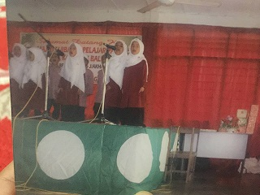
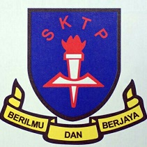
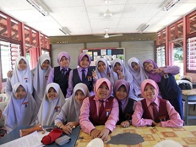
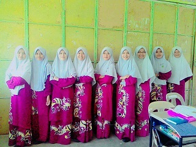
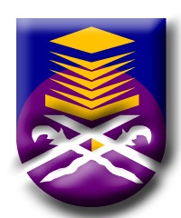
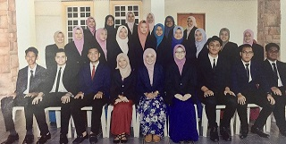

| PASTI DARUL AMAN | I was sent to this kindergarten at the age 5years old untill 6 years old .I'm also participated in many competion like nasyid and Tilawah Al-Quran. |  | |
|---|---|---|---|
| SK TUNKU PUTERA |  |  | Next, I continued my studies at the primary school at Sk Tunku Putera,
Baling Kedah. I went to school from grade 1 to grade 6.
I also participated in the District representative Choral Speaking competition in 2011. |
| MMBG |  |
Then, after sitting for the UPSR examination, I continued to study at Maktab Mahmud Baling. I also participated in competitions such as Nasyid, Reading Newspaper and ping pong representatives at the time. |
 |
| UiTM KEDAH |  |  | Lastly, after sitting for the SPM examination, I continued my Diploma at UiTM Kedah and now also continue my studies on Degree, in Information Science at there.There are many experiences that I got throughout at UiTM. |